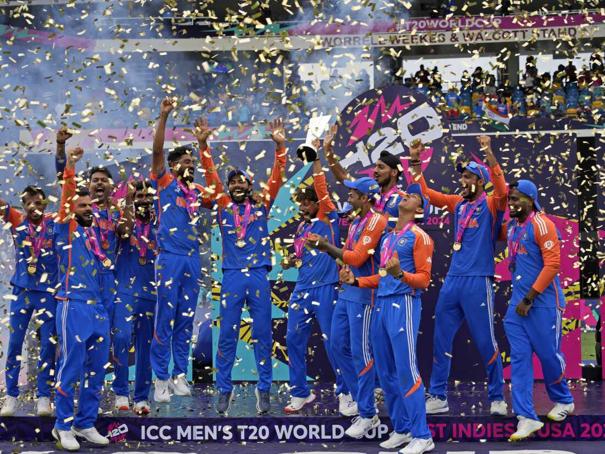

By bridging the gap between digital and physical mediums, you can find a lot of unexpected
and fun results. In this tutorial we will learn how to develop our own tool to create Riso
posters using Three.js. Below are steps to create a very basic editor, where spheres can be
added and moved around. We will then use post processing to export printable PDFs. Finally
find a Riso lab, pick your colors and print the poster. The goal for this setup is to offer a solid
starting point for you to create your own tool.